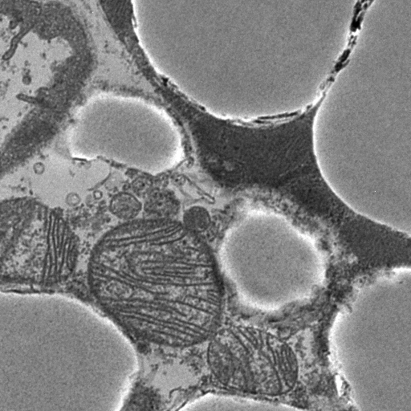
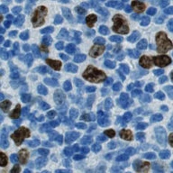
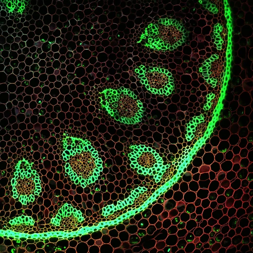

From words to
biological
structures.
Describe what you need. CISegWeVisOneVL creates pixel masks with up to four independent prompts — for EM organelles, tissue, vessels and more.
WeVisOne-VL-4B · existing foundation-model weights · research workflow



A small, focused
segmentation workflow.
Regular images, time series and HCS screens follow the same route. Source stores remain intact; results receive a separate OME-Zarr store and measurement table.
Open OME-Zarr
NGFF 0.4 / Zarr v2. Every field is checked before inference. Channel numbers are one-based.
Max or Mean
For Z > 1, each channel and timepoint is projected to 2D. Max is the default; Mean writes float32.
Describe the structure
Select up to four labels, English descriptions and channel mappings. One 4B model uses the offline local cache.
Inspect and measure
Independent uint32 labels, overlays, provenance and one CSV covering every channel. Prompt labels may overlap.
See what the model
actually predicts.
The gallery highlights reviewed demonstrations selected after explicit prompt comparisons. 18 label runs completed; unselected and failed experiments are retained in the research report. Predictions are never presented as manual ground truth.
Images, labels and sources ↗
EM, histology, plant structures, neurites and more. Filter by category and inspect each label.
02 / UsageFrom launcher to CLI ↗
Setup, projections, channels, parameters, output semantics and compact CSV measurements.
03 / EvidenceValidation and limitations ↗
39 tests, actual GPU runs, reader checks and the limitations of a general VLM for microscopy.
Begin locally.
The Windows launcher and headless wrapper use the same parameters. Models and full input stores stay outside Git.
Code on GitHub ↗git clone https://github.com/Cellular-Imaging-Amsterdam-UMC/ciseg-wevisonevl.git
cd ciseg-wevisonevl
create_env.cmd
.venv\Scripts\python tools\download_models.py
launch.cmdPython 3.12 via uv · tested on RTX A5000 24 GB. Docker recipes are prepared; a BIOMERO/Slurm deployment has not been performed.